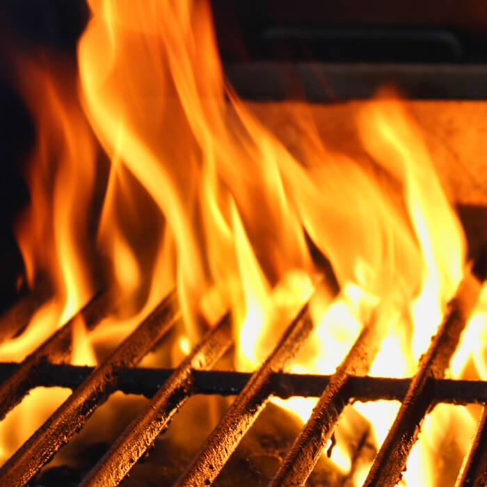
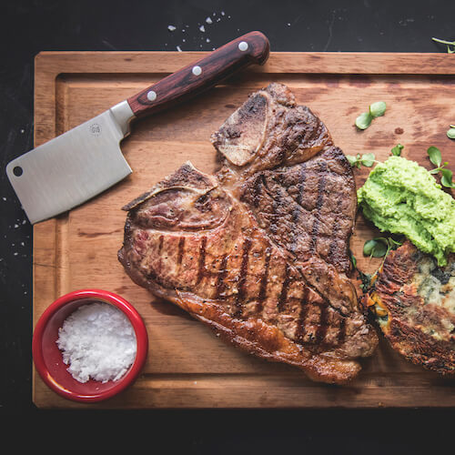
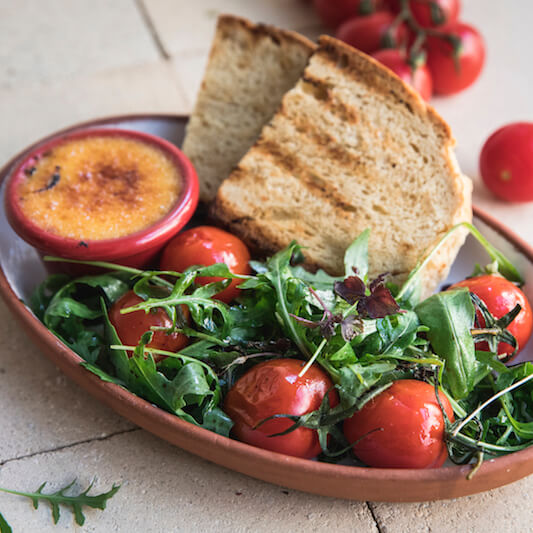

Menu
Cooking style
Quality of ingredients
Reservation
Vacancies
Contact
open fire cooking
"A place of peace where we use the ancient techniques of open fire cooking"

Open fire cooking

Menu

Ingredients
We are hiring cooks and waitresses.
Send us an email
.